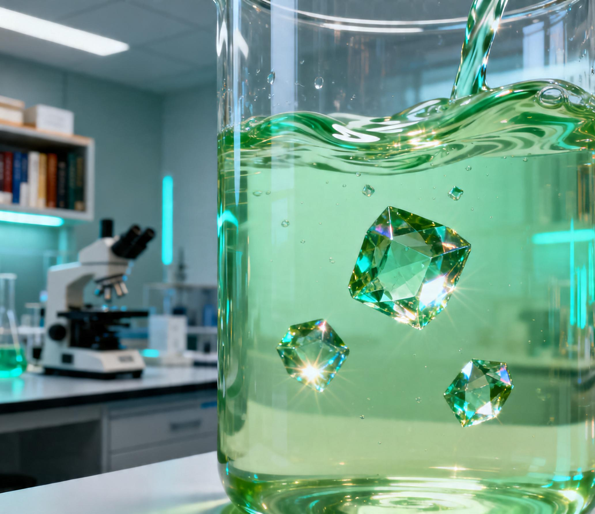
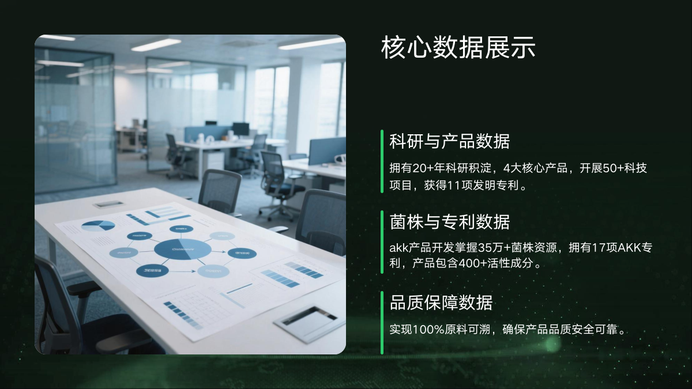
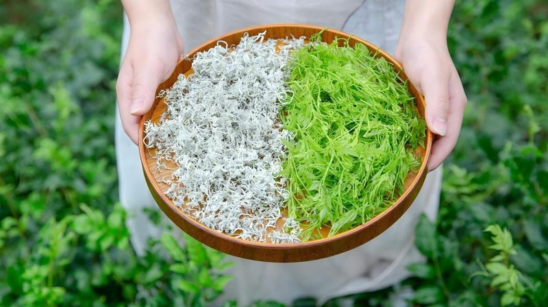
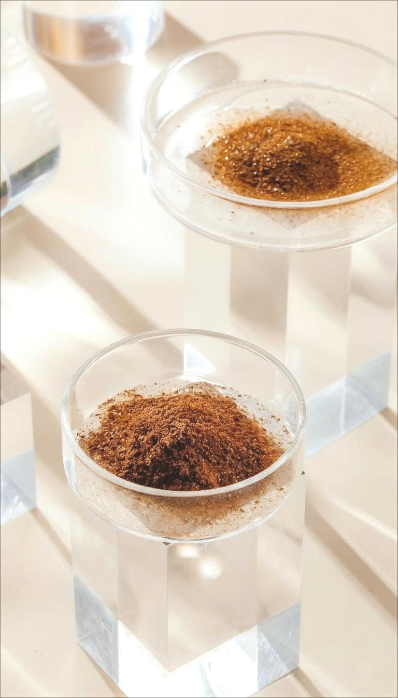
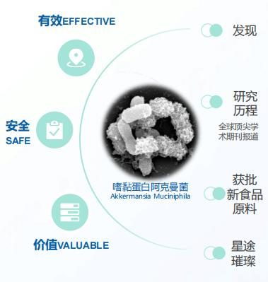
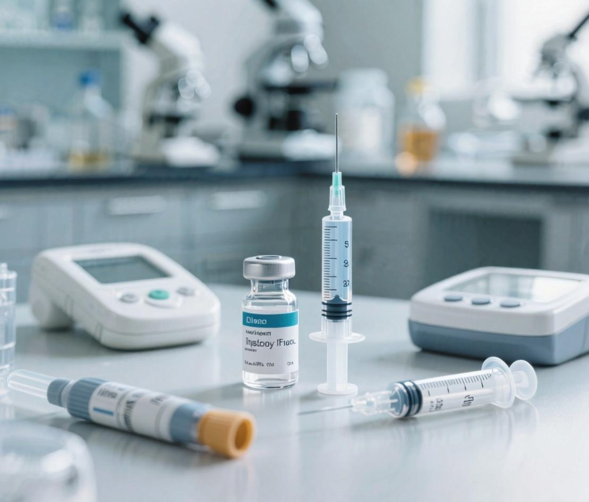
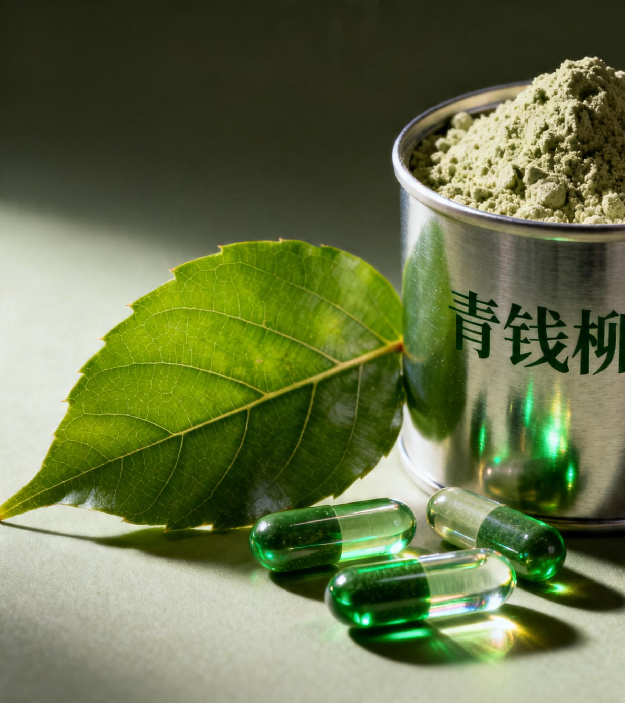

企业核心定位
专注将中国药食同源资源转化为高活性功能性原料，服务功能食品、营养补充剂与健康管理产品创新。

Company Focus
专注将中国药食同源资源转化为高活性功能性原料，服务功能食品、营养补充剂与健康管理产品创新。
依托刘仲华院士团队长达 20 年科研积淀，联合华南理工大学、湖南农业大学等机构协同研发。
采用自主研发、战略投资、独家代理结合的模式，布局代谢健康、肠道健康、抗衰老等核心赛道。

Science & Quality
Product Matrix

黄酮之王来源于显齿蛇葡萄叶，核心成分二氢杨梅素 DMY，黄酮含量达 45%，具备新食品原料资质。

黄金代谢因子来源于安化黑茶，采用冠突散囊菌发酵技术，面向靶向减脂、三高调理和肠道健康。
核心成分为多酚与有机硒，多酚含量达 25%，用于血糖管理、血脂调节与胰岛功能保护。

二代益生菌标杆来源于慕恩生物，核心成分 Amuc_1100 蛋白，规格达万亿级 CFU，覆盖减重、抗衰、睡眠与免疫调节。
Research Team
由食品、生物信息学、茶叶深加工及产业转化专家共同构成技术背书，联合多所高校与科研机构推动多学科交叉创新。
首席创始人科学家，国家规划教材《生物信息学》主编，具备科研与产业转化经验。
中国藤茶现代化研究奠基人，为藤茶提取物研发提供关键技术支撑。
中国工程院院士，国家科技进步二等奖获得者，为公司提供核心技术指导与战略支持。
Health Applications
金花黑茶提取物与 AKK 菌协同，面向减少内脏脂肪与减重后管理。
青钱柳叶多酚实现糖脂双降，同时修复胰岛功能，助力血糖稳定。
四大核心产品协同发力，改善血脂、血糖、胆固醇等代谢指标。
藤茶提取物增强 ADH 与 ALDH 活性，加速酒精代谢。
藤茶与金花黑茶双机制作用，抑制尿酸生成并促进排泄。
AKK 菌与藤茶提取物搭配，面向氧化应激、寿命与认知健康。
AKK 菌调节脑-肠轴信号，增加 5-HT 产生，支持睡眠质量提升。
产品线覆盖 FDA、GRAS、TGA 等国际市场合规需求。
Market Proof

AKM Lab-01 AKK 菌开展抗高血脂症临床试验，试验编号 NCT06974266。
围绕 AKM Lab-01 AKK 菌开展减重临床试验，试验编号 NCT07331974。

应用于血糖管理类草本产品与成人乳粉，为糖脂管理配方提供差异化卖点。